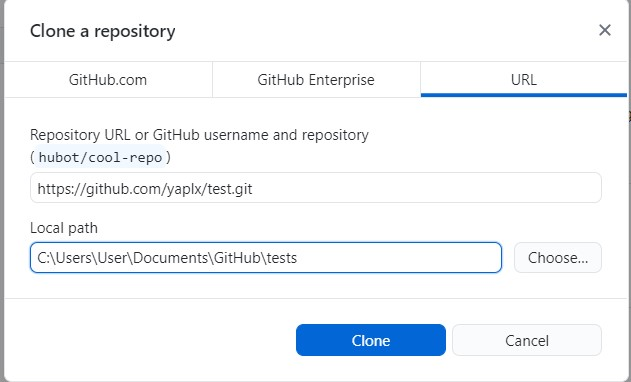
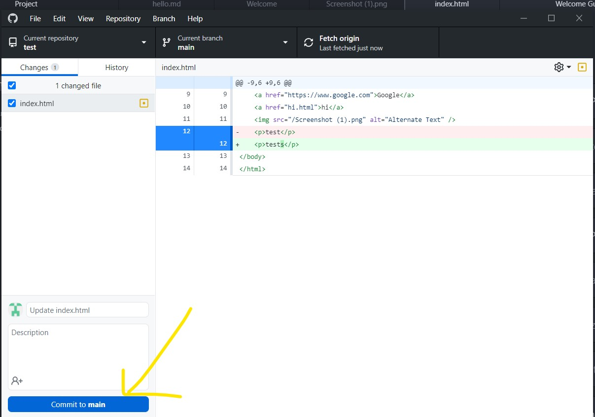
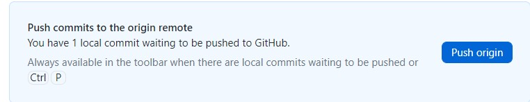
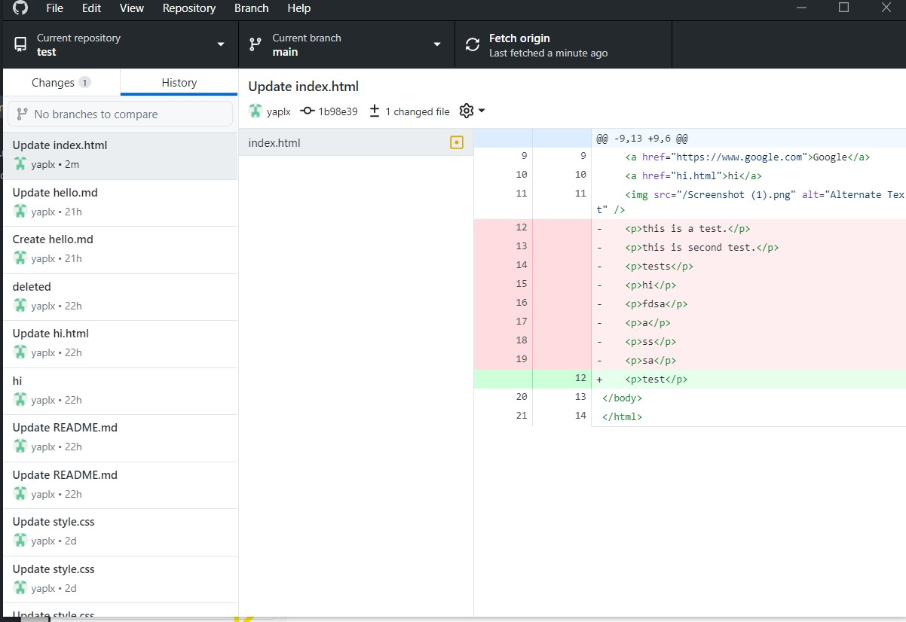

Git
At the begining, we must clone the URL to the Git Desktop as shown below

Image1: Cloning repository to Git Desktop
Next, we can edit the file using text editor such as Atom etc.After we edit
the file, we can know the modification made using Git Desktop and then commit the changes.

Image2: Git on Git Desktop
Lastly, push the file to remote repository.

Image3: Push to Origin
Besides that, Git Desktop allow us to check the history of the repository which is the left hand bar.

Image4: Version Check for repository